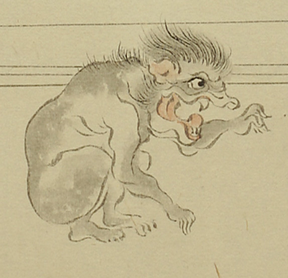

獣のような化物。獏か何かのように見える。全身が浅黒く、頭部から頬、背中に毛が生えている。額は狭く、鼻はない。唇は魚のようで、口は大きく裂け、上下に牙が生えている。しゃがんで、左手を前に伸ばし、右手を足元に置いている。
出典：親書誌：U426_nichibunken_0056：土蜘蛛草紙；ツチグモソウシ／日付：2007／資源識別子：U426_nichibunken_0056_0002_0007
Copyright (c)2010- International Research Center for Japanese Studies, Kyoto, Japan. All rights reserved.